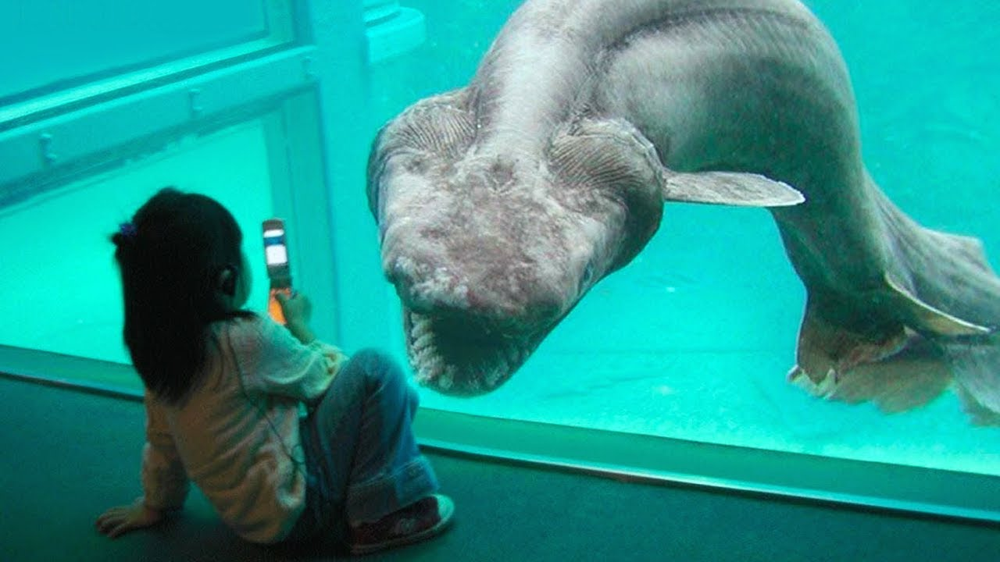
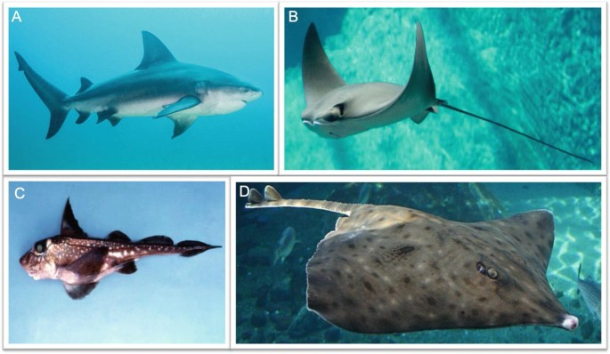
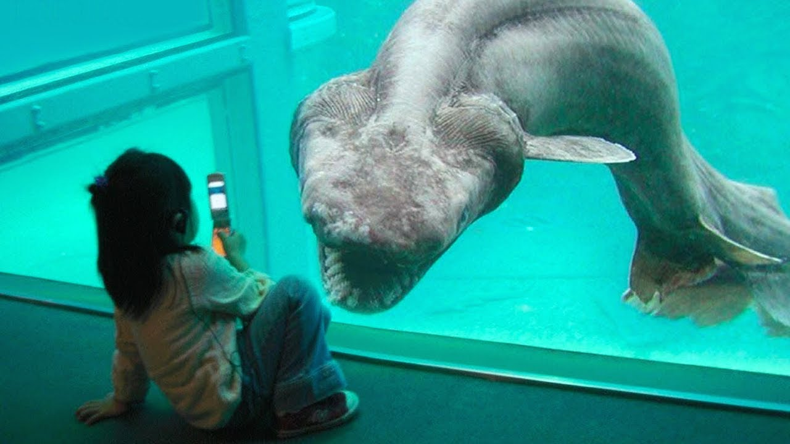
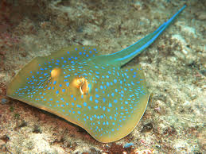

Tiburones (Selachimorpha)
Son depredadores marinos con cuerpos aerodinámicos y una gran variedad de tamaños, desde el pequeño tiburón pigmeo hasta el gigantesco tiburón ballena.
Explora el fascinante mundo de los tiburones y las rayas
Los seláceos son un grupo de peces cartilaginosos pertenecientes al subclase *Elasmobranchii*, que incluye a los tiburones y a las rayas. Su esqueleto está formado por cartílago en lugar de hueso, lo que los hace más ligeros y flexibles para la vida marina.
Los seláceos se dividen principalmente en dos grupos:
Son depredadores marinos con cuerpos aerodinámicos y una gran variedad de tamaños, desde el pequeño tiburón pigmeo hasta el gigantesco tiburón ballena.
Son especies con cuerpos aplanados y aletas pectorales amplias que se fusionan con la cabeza. Viven principalmente en fondos marinos y se alimentan de crustáceos y moluscos.
Puedes conocer más sobre las especies específicas visitando nuestras secciones dedicadas: